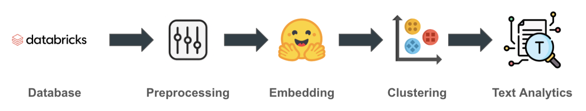

Commerce Name Unifier
1. Problem Definition / Objective
A fintech company receives thousands of transactions per day, each containing multiple data points — including the merchant name where the transaction took place. The problem is that the same merchant can appear under different names (for example, Amazon US and Amazon MX, both referring to Amazon but with different merchant names). Having an algorithm capable of unifying all possible variations of a merchant name would allow the creation of a unique merchant catalog, enabling analyses that reflect the true market share of each merchant, as well as features such as credit cards restricted to specific businesses, among other applications.
2. Data Available
The available dataset includes over 1.4 million merchant names derived from transactions made through the fintech platform over the past four years.
3. Solution Development
The first step involved preprocessing the merchant names using regular expressions to clean entries containing special characters, randomly generated alphanumeric combinations, and to convert all names to uppercase. Then, I used an embedding model from HuggingFace to transform merchant names into numerical vectors, which served as input for a DBSCAN machine learning clustering model that groups together similar merchant names. Finally, I implemented an algorithm that generates all possible n-grams within each cluster and selects the most frequent and longest n-gram as the unified name representing all merchant names belonging to that cluster.
4. Tools and Technologies
- SQL
- Regular Expressions
- Python
- Embeddings
- HuggingFace
- Clustering Model (DBSCAN)
- Text Analysis